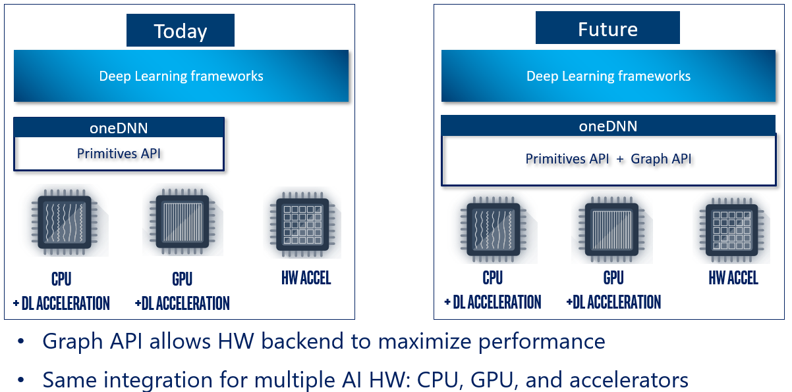
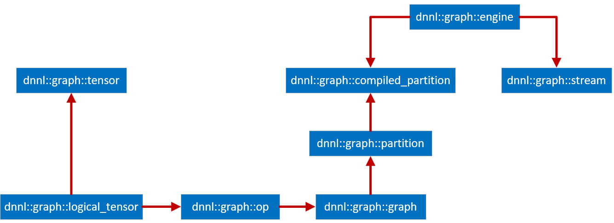
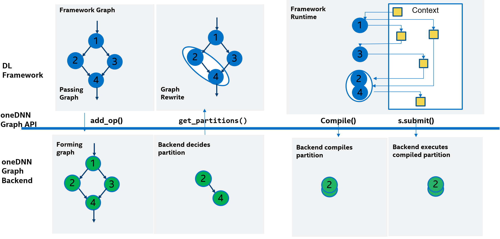

Performance Library for DNN Graph Optimization
0.3.0


oneDNN Graph API extends oneDNN with a unified high-level graph API for multiple AI hardware classes (CPU, GPU, accelerators). With a flexible graph interface, it maximizes the optimization opportunity for generating efficient code across a variety of Intel and non-Intel HW and can be closely integrated with ecosystem framework and inference engines. oneDNN Graph API accepts a deep learning computation graph as input and performs graph partitioning, where nodes that are candidates for fusion are grouped. oneDNN Graph compiles and executes a group of deep learning operations in a graph partition as a fused operation.

With the graph as input, oneDNN Graph implementation can perform target-specific optimization and code generation on a larger scope, which allows it to map the operations to hardware resources and improve execution efficiency and data locality with a global view of the computation graph. With the rapid introduction of hardware support for dense compute, the deep learning workload characteristic changed significantly from a few hot spots on compute-intensive operations to a broad number of operations scattered across the applications. Accelerating a few compute-intensive operations using primitive API has diminishing returns and limits the performance potential. It is critical to have a graph API to better exploit hardware compute capacity.
oneDNN Graph API provides graph partition as a unified graph interface for different types of AI hardware classes. Users construct a graph with operations and logical tensors and pass it to oneDNN Graph implementation to get partitions. oneDNN Graph implementation has a chance to receive a full graph and decides the best way to partition, with the consideration of maximizing performance and coordinating with the application’s control of hardware resources. As the partition size can range from a single op to a full graph, it satisfies the different needs of graph size for compilation and execution on different AI hardware.
oneDNN Graph programming model allows users to pass a computation graph and get partitions. Users then compile partitions, bind tensor data, and execute compiled partitions. Partitions are decided by oneDNN Graph implementation, which is the key concept to satisfy the different needs of AI hardware classes using a unified API.

oneDNN Graph API uses logical tensor, op, and graph to represent a computation graph. Logical tensor represents tensor’s metadata, like element data type, shape, and layout. OP represents an operation on a computation graph. OP has kind, attribute, and input and output logical tensors. OPs are added to the graph being constructed. As both OP and logical tensor contains a unique ID, the graph knows how to connect a producer OP to a consumer OP through a logical tensor. The graph constructed is immutable, and the sole purpose of the graph is to partition the graph. Once users get partitions, users should not add OP to the graph.
A partition is a connected subgraph within a graph. oneDNN Graph implementation analyzes a graph and returns a vector of partitions. The returned partitions must not form a dependence cycle. A partition needs to be compiled before execution. The compilation lowers down the compute logic to hardware ISA level and generates binary code. The generated code is specialized for the input and output tensor’s metadata. Users must specify the shape and layout for each logical tensor during compilation. Users must create new logical tensors to pass the enriched metadata with the compilation API. The new logical tensors must have the same IDs as the logical tensors passed at the graph construction time.
A compiled partition represents the generated code specialized for target hardware and tensor metadata passed with compilation API. To execute a compiled partition, users must pass input and output tensors. Input tensors must bind input data buffers to logical tensors. Users may query the compiled partition for output data buffer sizes. If the sizes are known, users may allocate the output data buffers and bind to output tensors. If the sizes are unknown, users must provide an allocator for oneDNN Graph implementation to allocate the output tensor buffer. The execution API takes a compiled partition, input tensors, and return output tensors with the data buffer updated.
An engine represents a target device and context in the system. It needs to be passed as a parameter for partition compilation. A stream abstracts hardware execution resources of a target device. It is required to execute a compiled partition.
oneDNN Graph API provides low precision support including both int8, bf16, and fp16. For int8, oneDNN Graph API supports quantized model with static quantization. For bf16 or fp16, oneDNN Graph supports deep learning framework’s auto mixed precision mechanism. In both cases, oneDNN Graph API expects users to convert the computation graph to low precision representation and specify the data’s precision and quantization parameters. oneDNN Graph API implementation should strictly respect the numeric precision of the computation. More details can be found at specification.
The Graph API is an addition to oneDNN’s current primitives programming model. It aims to works with the framework graph and identifies graph partitions to offload. The API allows the framework to pass the deep learning graph to oneDNN, which analyzes the graph and returns the partitions. The partition will be further compiled and executed as a fused operation in the framework graph.
The Graph API extends the current oneDNN’s post-ops attributes API to enable general mechanism of fusing DNN operations in the framework graph. oneDNN’s post-ops attributes API requires framework integration to perform explicit pattern match on the framework graph, so each new fusion capability requires framework modification. The Graph API performs the pattern match inside oneDNN, so new fusion capability can be enabled by just upgrading oneDNN library without requiring framework modification.

Deep learning framework provides a rich set of deep neural network (DNN) operations to developers to describe the deep learning computation graph. It typically has two modes of execution: imperative mode and graph mode. Imperative mode executes the DNN operation directly, and graph mode builds an internal representation (IR) for the computation graph, optimizes it, and then submits it to device runtime for execution.
oneDNN Graph API is to accelerate the graph mode. It is integrated into the graph optimizer after all the target-independent pass is done. It iterates the framework graph, converts framework OP to oneDNN Graph OP, and calls add_op() to pass the oneDNN Graph OP and its parameter tensors to oneDNN Graph. After passing all framework OP, it calls get_partitions() to return the partitions, and then replaces the partitions with fused ops.
When the framework executing a fused op, the fused op’s implementation is to call compile() which compiles its associated partition. Then it queries the compiled partition to get the sizes of output tensors, allocates memory for them, and calls execute() to execute the compiled partition.